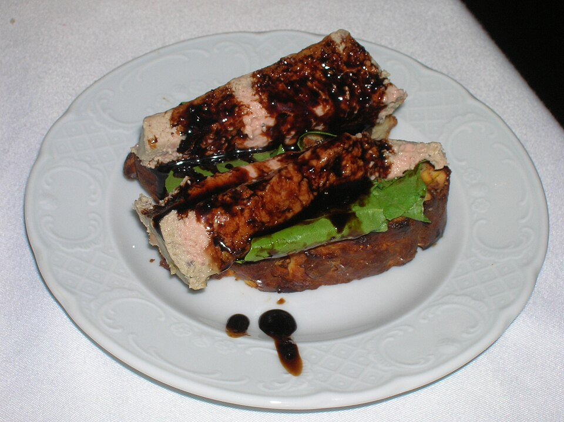

Acompanhamentos
Patê de miúdos de frango

Ingredientes
- 1 kg de miúdos de frango (moela, fígado e coração)
- 1 molho de cebolinha e salsa
- 1 folha de louro
- 2 tomates sem pele e sem sementes
- 1 pimentão verde e 1 vermelho
- 2 cebolas médias
- 1 dente de alho
- 3 colheres (sopa) de vinagre branco
- 2 gemas de ovos cozidos
- 1 xícara (chá) de cheiro-verde picado
- 2 tabletes de caldo de galinha
- Pimenta-malagueta a gosto
- Cerca de 100 g de toucinho (para fritar)
- ½ xícara (chá) de purê de tomate
- ½ xícara (chá) de azeitonas picadas
- ½ a 1 xícara (chá) de maionese
Modo de preparo
- Limpe bem as moelas. Cozinhe-as com os corações, o louro e o molho de cebolinha e salsa. Quase no fim, junte os fígados e cozinhe até restar cerca de 1 xícara de caldo.
- Bata tudo no liquidificador; ainda batendo, acrescente tomates, pimentões, cebolas, alho, cheiro-verde, vinagre, gemas, pimenta e caldos. Reserve.
- Frite o toucinho até dourar; retire os torresmos. No restante da gordura, refogue a pasta batida. Junte o purê de tomate e mexa até o fundo da panela aparecer.
- Esfrie, misture azeitonas e maionese. Guarde na geladeira em recipiente tampado.
Observação: toucinho, purê de tomate, azeitonas e maionese aparecem só no modo de preparo do recorte; quantidades estimadas.